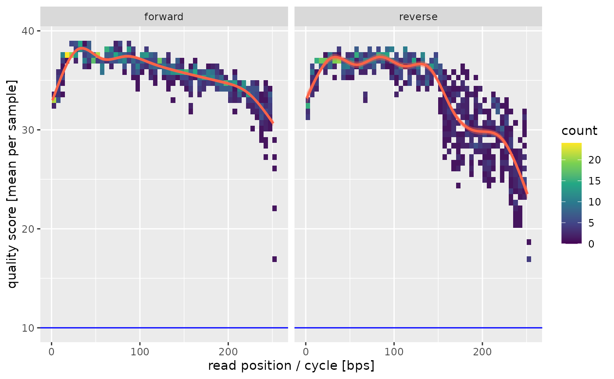

vignettes/02_amplicon_sequencing.Rmd
02_amplicon_sequencing.RmdWe can combine what we have seen in the quality assessment and preprocessing tutoarials with specific workflow steps for amplicon sequencing, for instance 16S rRNA gene sequencing.
As before we will load miso and use our example
data:
## Also loading:## - dada2=1.28.0
## - data.table=1.15.2
## - ggplot2=3.5.0
## - magrittr=2.0.3
## - phyloseq=1.44.0
## - ShortRead=1.58.0
## - yaml=2.3.8## Found tools:## - minimap2=2.27-r1193
## - samtools=1.19.2##
## Attaching package: 'miso'## The following object is masked _by_ 'package:BiocGenerics':
##
## normalize## The following object is masked from 'package:graphics':
##
## layout
path <- system.file("extdata/16S", package = "miso")As before a good first step is to look at the qualities of the raw data.
quals <- find_read_files(path) %>% quality_control()## INFO [2024-04-25 12:55:47] Running quality assay for forward reads from 5 files.
## INFO [2024-04-25 12:55:50] Median per base error is 0.016% (median score = 38.00).
## INFO [2024-04-25 12:55:50] Mean per cycle entropy is 0.808 (in [0, 2]).
## INFO [2024-04-25 12:55:50] On average we have 8963.80 +- 6059.73 reads per file.
## INFO [2024-04-25 12:55:50] Running quality assay for reverse reads from 5 files.
## INFO [2024-04-25 12:55:51] Median per base error is 0.020% (median score = 37.00).
## INFO [2024-04-25 12:55:51] Mean per cycle entropy is 0.731 (in [0, 2]).
## INFO [2024-04-25 12:55:51] On average we have 8963.80 +- 6059.73 reads per file.
quals$quality_plot
Again we see that we might want to truncate the reads a bit on the 3’ ends to avoid the dip in quality. Depending on your amplified fragment make sure that this leaves sufficient overlap for merging (requires >20bp).
We can now perform our preprocessing and denoise workflow to obtain the amplicon sequence variants (ASVs) in our samples. We can chain our preprocessing and denoise workflows from our original quality assessment. For clarity we will define the confguration for the analysis on top.
config <- list(
preprocess = config_preprocess(
trimLeft = 10, # this is the default
trunLen = c(240, 180), # forward and reverse truncation
out_dir = tempdir() # will store filtered files in a temporary dir
),
denoise = config_denoise() # will only use defaults
)
denoised <- quals %>% preprocess(config$preprocess) %>% denoise(config$denoise)## INFO [2024-04-25 12:55:52] Preprocessing reads for 5 paired-end samples...
## INFO [2024-04-25 12:55:58] 3.23e+04/4.48e+04 (73.36%) reads passed preprocessing.
## INFO [2024-04-25 12:55:58] Running DADA2 on 1 run(s) from a sample of up to 2.5e+08 bases.
## INFO [2024-04-25 12:55:58] Learning errors for run `all` (5 samples)...
## INFO [2024-04-25 12:56:53] Dereplicating run `all` (5 samples)...
## INFO [2024-04-25 12:56:54] Inferring sequence variants for run `all`...
## INFO [2024-04-25 12:57:08] Found 164 sequence variants in run `all`...
## INFO [2024-04-25 12:57:08] Removed 5/164 sequence variants as chimeric from run all (1.21% of reads)
## INFO [2024-04-25 12:57:08] Finished run `all`.
## INFO [2024-04-25 12:57:08] Merged sequence tables. Found a total of 159 ASVs. Assigning taxonomy...
## INFO [2024-04-25 12:57:08] Downloading taxa db to /tmp/Rtmp959rH9/taxa.fna.gz...
## INFO [2024-04-25 12:59:43] Downloading species db to /tmp/Rtmp959rH9/species.fna.gz...
## INFO [2024-04-25 13:00:13] Reads with taxonomic classification: Kingdom=100%, Phylum=100%, Class=100%, Order=100%, Family=96.4%, Genus=53.6%, Species=18.8%, Species=18.8%
## INFO [2024-04-25 13:00:13] Hashing 159 sequence variants.This will run both workflow steps sequentially and will use all available CPUs by default. You will get some disgnostic output on the logging interface but you can also inspect those in the returned artifact.
For instance to see how many reads were conserved in each processing step:
denoised$passed_reads## raw preprocessed id derep_forward derep_reverse denoised_forward
## <num> <num> <char> <int> <int> <int>
## 1: 7793 5616 F3D0 5616 5616 5461
## 2: 5869 4388 F3D1 4388 4388 4280
## 3: 19620 13787 F3D2 13787 13787 13633
## 4: 6758 4527 F3D3 4527 4527 4423
## 5: 4779 3953 Mock 3953 3953 3933
## denoised_reverse merged non_chimera
## <int> <int> <num>
## 1: 5415 4795 4795
## 2: 4255 4005 4005
## 3: 13583 12872 12700
## 4: 4328 3760 3578
## 5: 3934 3895 3895We see that most samples were conserved (as reported in the logging).
The abundance of each sequence variant is saved in
denoised$feature_tables which contains abundances for
samples x ASVs. The ASVs here have been named by their md5 hash value
and you can get the taxonomy and original sequence from
denoised$taxonomy:
denoised$taxonomy[1, , drop = FALSE]## Kingdom Phylum Class
## c69a3db92e1dcdebb01dfaa5b5795559 "Bacteria" "Bacteroidota" "Bacteroidia"
## Order Family Genus Species
## c69a3db92e1dcdebb01dfaa5b5795559 "Bacteroidales" "Muribaculaceae" NA NA
## Species
## c69a3db92e1dcdebb01dfaa5b5795559 NA
## sequence
## c69a3db92e1dcdebb01dfaa5b5795559 "ACGGAGGATGCGAGCGTTATCCGGATTTATTGGGTTTAAAGGGTGCGCAGGCGGAAGATCAAGTCAGCGGTAAAATTGAGAGGCTCAACCTCTTCGAGCCGTTGAAACTGGTTTTCTTGAGTGAGCGAGAAGTATGCGGAATGCGTGGTGTAGCGGTGAAATGCATAGATATCACGCAGAACTCCGATTGCGAAGGCAGCATACCGGCGCTCAACTGACGCTCATGCACGAAAGTGTGGGTATCGAACAG"To see all steps run to obtain that output you can check the provenance:
denoised$steps## [1] "quality_control" "preprocess" "denoise"The denoise workflow step supports multiple sequencing
runs in the same experiment. This requires that your files data table
has a “run” column. If you sequencing files are organized such that
every subfolder is a run you can simply use
find_read_files(path, dirs_are_runs = TRUE). Otherwise, you
have to specify the run by hand. We will do so for our files here:
## Key: <id>
## forward
## <char>
## 1: /tmp/Rtmp0LsDXk/temp_libpath20758c3f036fbb/miso/extdata/16S/F3D0_S188_L001_R1_001.fastq.gz
## 2: /tmp/Rtmp0LsDXk/temp_libpath20758c3f036fbb/miso/extdata/16S/F3D1_S189_L001_R1_001.fastq.gz
## 3: /tmp/Rtmp0LsDXk/temp_libpath20758c3f036fbb/miso/extdata/16S/F3D2_S190_L001_R1_001.fastq.gz
## 4: /tmp/Rtmp0LsDXk/temp_libpath20758c3f036fbb/miso/extdata/16S/F3D3_S191_L001_R1_001.fastq.gz
## 5: /tmp/Rtmp0LsDXk/temp_libpath20758c3f036fbb/miso/extdata/16S/Mock_S280_L001_R1_001.fastq.gz
## reverse
## <char>
## 1: /tmp/Rtmp0LsDXk/temp_libpath20758c3f036fbb/miso/extdata/16S/F3D0_S188_L001_R2_001.fastq.gz
## 2: /tmp/Rtmp0LsDXk/temp_libpath20758c3f036fbb/miso/extdata/16S/F3D1_S189_L001_R2_001.fastq.gz
## 3: /tmp/Rtmp0LsDXk/temp_libpath20758c3f036fbb/miso/extdata/16S/F3D2_S190_L001_R2_001.fastq.gz
## 4: /tmp/Rtmp0LsDXk/temp_libpath20758c3f036fbb/miso/extdata/16S/F3D3_S191_L001_R2_001.fastq.gz
## 5: /tmp/Rtmp0LsDXk/temp_libpath20758c3f036fbb/miso/extdata/16S/Mock_S280_L001_R2_001.fastq.gz
## id injection_order lane run
## <char> <num> <num> <int>
## 1: F3D0 188 1 1
## 2: F3D1 189 1 1
## 3: F3D2 190 1 2
## 4: F3D3 191 1 2
## 5: Mock 280 1 3Rerunning the previous workflow with this file list will now give a slightly different output:
byrun <- files %>% preprocess(config$preprocess) %>%
denoise(config$denoise)Error profiles will now be estimated for each run individually and final tables will be merged at the end. This is slower than having all files in one run so you should always try to distribute your samples across as few sequencing runsps as possible.
For all further analyses you might want to work with a data type which is more suited for amplicon abundance data. You can directly obtain a phyloseq object with
ps <- as_phyloseq(denoised)It is possible to pass in metadata as a data frame with
to_phyloseq(object, metadata = df).
You can now use all additional functions from miso on
that. For instance we can get the ASV counts in a tidy data table:
asv_counts <- taxa_count(ps, lev = NA)
asv_counts[sample == "Mock" & reads > 0]## sample taxa reads
## <char> <fctr> <int>
## 1: Mock e941355a23a624aef3fe3e4caf9bc301 564
## 2: Mock 532c8d14997a65c94cdabbf41c8f2647 90
## 3: Mock 35b4a92774d4fe5a2d33367602b223a8 378
## 4: Mock b2df6175ad0400ad1301072c5d64a75f 348
## 5: Mock cc36ce261772980980931b51d3d9a379 309
## 6: Mock 7b106324ebe9486ccd49abc287a6de45 288
## 7: Mock ed8390cd975c833a487e2678b248bf13 272
## 8: Mock 454886158d7f3bc1b770132e75a1c87f 243
## 9: Mock ea98650694b6343f2ab88943711c2595 206
## 10: Mock 5ff1477099ca90cc5c48b7b231b735eb 203
## 11: Mock 75d2399d0d5f38dcd98e7f4c91271272 173
## 12: Mock bf4c86674249ac9c02f5701d3dfdfd31 163
## 13: Mock 8a214389774631998cca74c5b0088d8b 148
## 14: Mock 37abc7707b7be944fb565da5297d3175 136
## 15: Mock f43b31caaa0047cf889f30ec8e56ec17 131
## 16: Mock 664acad52badcb22b536dd609d7c4f24 111
## 17: Mock e0c48dcc0eb1e70ac90edb8107d4e0d4 69
## 18: Mock b6a0a5f9e9187f987e31ebf1c8c4bd1d 48
## 19: Mock b6f891b70ee28c80ed84667ea428baf3 15
## species
## <char>
## 1: Staphylococcus CGTAGGTGGCAAGCGTTATCCGGAATTATTGGGCGTAAAGCGCGCGTAGGCGGTTTTTTAAGTCTGATGTGAAAGCCCACGGCTCAACCGTGGAGGGTCATTGGAAACTGGAAAACTTGAGTGCAGAAGAGGAAAGTGGAATTCCATGTGTAGCGGTGAAATGCGCAGAGATATGGAGGAACACCAGTGGCGAAGGCGACTTTCTGGTCTGTAACTGACGCTGATGTGCGAAAGCGTGGGGATCAAACA
## 2: Lactobacillus CGTAGGTGGCAAGCGTTGTCCGGATTTATTGGGCGTAAAGCGAGTGCAGGCGGTTCAATAAGTCTGATGTGAAAGCCTTCGGCTCAACCGGAGAATTGCATCAGAAACTGTTGAACTTGAGTGCAGAAGAGGAGAGTGGAACTCCATGTGTAGCGGTGGAATGCGTAGATATATGGAAGAACACCAGTGGCGAAGGCGGCTCTCTGGTCTGCAACTGACGCTGAGGCTCGAAAGCATGGGTAGCGAACA
## 3: Acinetobacter AGGGTGCGAGCGTTAATCGGATTTACTGGGCGTAAAGCGTGCGTAGGCGGCTTATTAAGTCGGATGTGAAATCCCCGAGCTTAACTTGGGAATTGCATTCGATACTGGTGAGCTAGAGTATGGGAGAGGATGGTAGAATTCCAGGTGTAGCGGTGAAATGCGTAGAGATCTGGAGGAATACCGATGGCGAAGGCAGCCATCTGGCCTAATACTGACGCTGAGGTACGAAAGCATGGGGAGCAAACA
## 4: Bacillus CGTAGGTGGCAAGCGTTATCCGGAATTATTGGGCGTAAAGCGCGCGCAGGTGGTTTCTTAAGTCTGATGTGAAAGCCCACGGCTCAACCGTGGAGGGTCATTGGAAACTGGGAGACTTGAGTGCAGAAGAGGAAAGTGGAATTCCATGTGTAGCGGTGAAATGCGTAGAGATATGGAGGAACACCAGTGGCGAAGGCGACTTTCTGGTCTGTAACTGACACTGAGGCGCGAAAGCGTGGGGAGCAAACA
## 5: Helicobacter GAGGGTGCAAGCGTTACTCGGAATCACTGGGCGTAAAGAGCGCGTAGGCGGGATAGTCAGTCAGGTGTGAAATCCTATGGCTTAACCATAGAACTGCATTTGAAACTACTATTCTAGAGTGTGGGAGAGGTAGGTGGAATTCTTGGTGTAGGGGTAAAATCCGTAGAGATCAAGAGGAATACTCATTGCGAAGGCGACCTGCTGGAACATTACTGACGCTGATTGCGCGAAAGCGTGGGGAGCAAA
## 6: Clostridium sensu stricto 1 CGTAGGTGGCAAGCGTTGTCCGGATTTACTGGGCGTAAAGGGAGCGTAGGTGGATATTTAAGTGGGATGTGAAATACTCGGGCTTAACCTGGGTGCTGCATTCCAAACTGGATATCTAGAGTGCAGGAGAGGAAAGTAGAATTCCTAGTGTAGCGGTGAAATGCGTAGAGATTAGGAAGAATACCAGTGGCGAAGGCGACTTTCTGGACTGTAACTGACACTGAGGCTCGAAAGCGTGGGGAGCAAACA
## 7: Neisseria CGTAGGGTGCGAGCGTTAATCGGAATTACTGGGCGTAAAGCGGGCGCAGACGGTTACTTAAGCAGGATGTGAAATCCCCGGGCTCAACCCGGGAACTGCGTTCTGAACTGGGTGACTCGAGTGTGTCAGAGGGAGGTAGAATTCCACGTGTAGCAGTGAAATGCGTAGAGATGTGGAGGAATACCGATGGCGAAGGCAGCCTCCTGGGACAACACTGACGTTCATGCCCGAAAGCGTGGGTAGCAAACA
## 8: Actinomyces CGTAGGGCGCGAGCGTTGTCCGGAATTATTGGGCGTAAAGGGCTTGTAGGCGGTTGGTCGCGTCTGCCGTGAAATCCTCTGGCTTAACTGGGGGCGTGCGGTGGGTACGGGCTGACTTGAGTGCGGTAGGGGAGACTGGAACTCCTGGTGTAGCGGTGGAATGCGCAGATATCAGGAAGAACACCGGTGGCGAAGGCGGGTCTCTGGGCCGTTACTGACGCTGAGGAGCGAAAGCGTGGGGAGCGAACA
## 9: Bacteroides CGGAGGATCCGAGCGTTATCCGGATTTATTGGGTTTAAAGGGAGCGTAGATGGATGTTTAAGTCAGTTGTGAAAGTTTGCGGCTCAACCGTAAAATTGCAGTTGATACTGGATATCTTGAGTGCAGTTGAGGCAGGCGGAATTCGTGGTGTAGCGGTGAAATGCTTAGATATCACGAAGAACTCCGATTGCGAAGGCAGCCTGCTAAGCTGCAACTGACATTGAGGCTCGAAAGTGTGGGTATCAAACA
## 10: Streptococcus ACGTAGGTCCCGAGCGTTGTCCGGATTTATTGGGCGTAAAGGGAGCGCAGGCGGTCAGGAAAGTCTGGAGTAAAAGGCTATGGCTCAACCATAGTGTGCTCTGGAAACTGTCTGACTTGAGTGCAGAAGGGGAGAGTGGAATTCCATGTGTAGCGGTGAAATGCGTAGATATATGGAGGAACACCAGTGGCGAAAGCGGCTCTCTGGTCTGTCACTGACGCTGAGGCTCGAAAGCGTGGGTAGCGAACAG
## 11: Enterococcus CGTAGGTGGCAAGCGTTGTCCGGATTTATTGGGCGTAAAGCGAGCGCAGGCGGTTTCTTAAGTCTGATGTGAAAGCCCCCGGCTCAACCGGGGAGGGTCATTGGAAACTGGGAGACTTGAGTGCAGAAGAGGAGAGTGGAATTCCATGTGTAGCGGTGAAATGCGTAGATATATGGAGGAACACCAGTGGCGAAGGCGGCTCTCTGGTCTGTAACTGACGCTGAGGCTCGAAAGCGTGGGGAGCAAACA
## 12: Escherichia-Shigella CGGAGGGTGCAAGCGTTAATCGGAATTACTGGGCGTAAAGCGCACGCAGGCGGTTTGTTAAGTCAGATGTGAAATCCCCGGGCTCAACCTGGGAACTGCATCTGATACTGGCAAGCTTGAGTCTCGTAGAGGGGGGTAGAATTCCAGGTGTAGCGGTGAAATGCGTAGAGATCTGGAGGAATACCGGTGGCGAAGGCGGCCCCCTGGACGAAGACTGACGCTCAGGTGCGAAAGCGTGGGGAGCAAACA
## 13: Listeria CGTAGGTGGCAAGCGTTGTCCGGATTTATTGGGCGTAAAGCGCGCGCAGGCGGTCTTTTAAGTCTGATGTGAAAGCCCCCGGCTTAACCGGGGAGGGTCATTGGAAACTGGAAGACTGGAGTGCAGAAGAGGAGAGTGGAATTCCACGTGTAGCGGTGAAATGCGTAGATATGTGGAGGAACACCAGTGGCGAAGGCGACTCTCTGGTCTGTAACTGACGCTGAGGCGCGAAAGCGTGGGGAGCAAACA
## 14: Pseudomonas CGAAGGGTGCAAGCGTTAATCGGAATTACTGGGCGTAAAGCGCGCGTAGGTGGTTCAGCAAGTTGGATGTGAAATCCCCGGGCTCAACCTGGGAACTGCATCCAAAACTACTGAGCTAGAGTACGGTAGAGGGTGGTGGAATTTCCTGTGTAGCGGTGAAATGCGTAGATATAGGAAGGAACACCAGTGGCGAAGGCGACCACCTGGACTGATACTGACACTGAGGTGCGAAAGCGTGGGGAGCAAACA
## 15: Streptococcus ACGTAGGTCCCGAGCGTTGTCCGGATTTATTGGGCGTAAAGCGAGCGCAGGCGGTTCTTTAAGTCTGAAGTTAAAGGCAGTGGCTTAACCATTGTACGCTTTGGAAACTGGAGGACTTGAGTGCAGAAGGGGAGAGTGGAATTCCATGTGTAGCGGTGAAATGCGTAGATATATGGAGGAACACCGGTGGCGAAAGCGGCTCTCTGGTCTGTAACTGACGCTGAGGCTCGAAAGCGTGGGGAGCAAACAG
## 16: Deinococcus CGGAGGGTGCAAGCGTTACCCGGAATCACTGGGCGTAAAGGGCGTGTAGGCGGAAATTTAAGTCTGGTTTTAAAGACCGGGGCTCAACCTCGGGGATGGACTGGATACTGGATTTCTTGACCTCTGGAGAGGTAACTGGAATTCCTGGTGTAGCGGTGGAATGCGTAGATACCAGGAGGAACACCAATGGCGAAGGCAAGTTACTGGACAGAAGGTGACGCTGAGGCGCGAAAGTGTGGGGAGCAAAC
## 17: Porphyromonas CGGAGGATGCGAGCGTTATCCGGATTTATTGGGTTTAAAGGGTGCGTAGGTTGTTCGGTAAGTCAGCGGTGAAACCTGAGCGCTCAACGTTCAGCCTGCCGTTGAAACTGCCGGGCTTGAGTTCAGCGGCGGCAGGCGGAATTCGTGGTGTAGCGGTGAAATGCATAGATATCACGAGGAACTCCGATTGCGAAGGCAGCTTGCCATACTGCGACTGACACTGAAGCACGAAGGCGTGGGTATCAAACA
## 18: Rhodobacter CGGAGGGGGCTAGCGTTATTCGGAATTACTGGGCGTAAAGCGCACGTAGGCGGATCGGAAAGTCAGAGGTGAAATCCCAGGGCTCAACCCTGGAACTGCCTTTGAAACTCCCGATCTTGAGGTCGAGAGAGGTGAGTGGAATTCCGAGTGTAGAGGTGAAATTCGTAGATATTCGGAGGAACACCAGTGGCGAAGGCGGCTCACTGGCTCGATACTGACGCTGAGGTGCGAAAGCGTGGGGAGCAAACA
## 19: Streptococcus ACGTAGGTCCCGAGCGTTGTCCGGATTTATTGGGCGTAAAGCGAGCGCAGGCGGTTAGATAAGTCTGAAGTTAAAGGCTGTGGCTTAACCATAGTAGGCTTTGGAAACTGTTTAACTTGAGTGCAAGAGGGGAGAGTGGAATTCCATGTGTAGCGGTGAAATGCGTAGATATATGGAGGAACACCGGTGGCGAAAGCGGCTCTCTGGCTTGTAACTGACGCTGAGGCTCGAAAGCGTGGGGAGCAAACAGHere we see that we have identified 10 ASVs in the Mock sample. The exact number of strains in that sample is 20, which we don’t find since we don’t have enough reads available to learn a perfect error model. This is not surprising since those are only a few files from that particular study.
We could also plot the phyla distribution across the samples:
plot_taxa(ps)## Warning: Invalid .internal.selfref detected and fixed by taking a (shallow)
## copy of the data.table so that := can add this new column by reference. At an
## earlier point, this data.table has been copied by R (or was created manually
## using structure() or similar). Avoid names<- and attr<- which in R currently
## (and oddly) may copy the whole data.table. Use set* syntax instead to avoid
## copying: ?set, ?setnames and ?setattr. If this message doesn't help, please
## report your use case to the data.table issue tracker so the root cause can be
## fixed or this message improved.